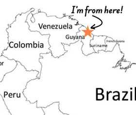
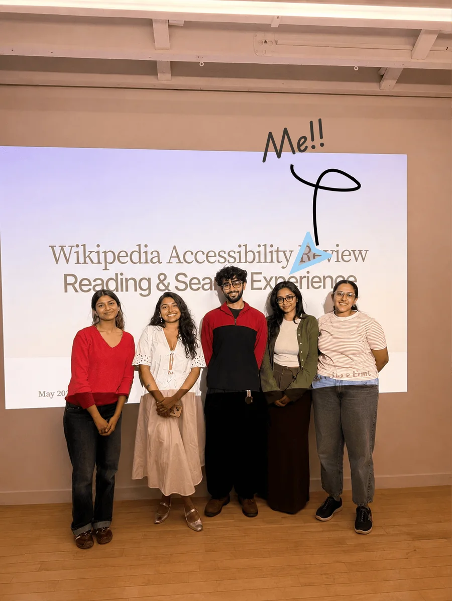
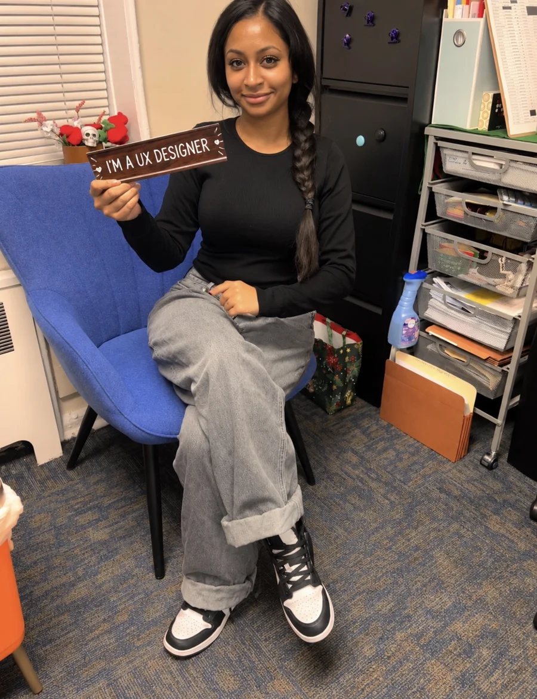
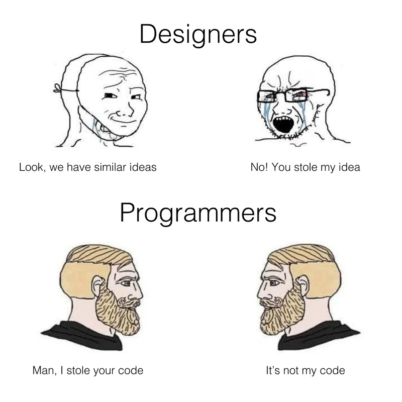

I design from research, build in code, and write clearly about the why behind each decision. Right now I’m a UX designer at Pratt’s Center for Digital Experiences, working with clients like the Wikimedia Foundation and CardStory.
Flushing, Queens · born in Georgetown, GuyanaFeatured at Wordweaver. RSL V.S. Pritchett Prize, 2021.
B.S. Computer Science, SNHU.
Software engineer intern, Walmart Global Tech.
M.S. Information Experience Design, Pratt.




Open to new opportunities and conversations about UX research. Always happy to talk shop.
Email meDesigned & engineered by Shav (: